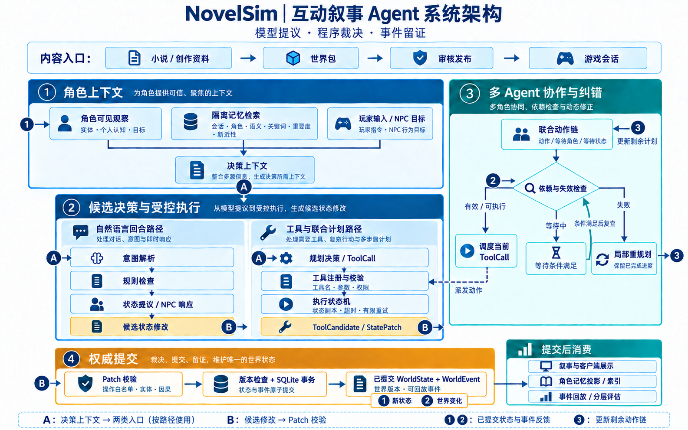

背景：让叙事行动落到世界状态
NovelSim 面向互动叙事中的玩家与 NPC。自然语言可以表达拿取物品、获取消息或结盟等意图，实际变化则需要检查物品归属、角色位置、权限与证据。系统用服务端权威状态维护世界事实，让模型在角色可见的信息范围内规划行动。
小说和创作资料在内容生产阶段编译为 WorldPackage，包含实体、规则、初始状态和剧情资料，经审核发布后创建游戏会话。在线回合加载世界包，执行玩家输入和 NPC 目标，再将已提交事件交给叙事、Web 与 Unity 展示。
问题与方法设计
| 问题 | 实现方法 |
|---|---|
| 文本意图与真实行动混淆 | 模型提出候选，规则与工具校验决定合法变化 |
| 角色读取未知秘密 | WorldState 按角色投影，记忆按会话与角色隔离 |
| 多角色行动有依赖 | 联合动作链、显式等待与等待图 |
| 环境变化使计划失效 | 提取依赖、计算受影响范围、局部替换剩余动作 |
| 事件与状态可能分叉 | 乐观版本检查、SQLite 原子提交与事件回放 |
总体架构与八个实现模块

| 模块 | 输出 |
|---|---|
| 1. 世界建模与输入规划 | Action、PlannerDecision、ToolCall |
| 2. 受控工具与执行状态机 | ToolCandidate、ToolResult、Trace |
| 3. 校验、原子提交与回放 | WorldEvent、新世界版本 |
| 4. 角色认知与信息传播 | belief、来源与证据链 |
| 5. 长期记忆与混合检索 | 角色范围内的相关经历 |
| 6. 联合计划与显式等待 | 动作指针、等待图与执行进度 |
| 7. 动态纠错与局部重规划 | 受影响角色的新动作链 |
| 8. 叙事呈现与分层验证 | 表现事件、遥测与组件测试 |
模块一：世界建模与输入规划
步骤 1：结构化世界状态
WorldState 用稳定 ID 管理角色、地点、物品、关系、事实、belief 和计划，并携带 version。世界包声明实体和能力，状态快照可序列化和校验。
步骤 2：解析自然语言回合
ActionParser 将玩家输入解析为候选 Action，检查世界概念与实体；RuleEngine 判断行动条件，TransitionProposer 提出状态修改。自然语言回合与工具规划使用各自入口，共同进入权威提交流程。
步骤 3：生成角色观察
GameObservation 组织 actor_id、时间线、world_version、目标、计划、可见实体、belief、记忆、工具 Schema 和上一动作反馈。规划器接收只读观察，执行权限由运行时检查。
步骤 4：生成结构化决策
PlannerPolicy.decide 接收观察与工具定义，返回 PlannerDecision，再转换为 ToolCall 或动作链。实际采用 prompt/react 策略，调用 gpt-5.6-sol；scripted 策略用于确定性机制测试。Web 入口通过 draft、approved 和执行状态管理计划，草案经人工审核进入执行。
模块二：受控工具与执行状态机
步骤 1：注册执行契约
ToolDefinition 保存名称、Pydantic 参数模型、权限、处理器、超时和允许的 Patch 操作。注册时检查非法名称、重复工具和非正超时。工具覆盖移动、交谈、观察、物品操作、信息传播、结盟及受限能力。
步骤 2：执行前校验
prepare 检查工具存在、参数合法、actor 存在且存活、调用权限覆盖要求。位置、物品归属和目标条件由对应处理器检查。
步骤 3：推进执行状态
状态机经过 perceive、retrieve_memory、decide、validate_tool、navigate、execute_tool、observe_result 等阶段，记录输入快照、反馈和失败原因。导航记录等待目标，客户端依据表现事件执行导航。
步骤 4：在副本上产生候选
registry.invoke 深拷贝状态形成 ToolContext。异步处理器直接 await，同步处理器在线程池执行，返回 ToolCandidate，包含 patch、output、summary、target_ids 和 presentation_events。外层 asyncio.wait_for 控制等待超时，默认 max_retries=1、max_replans=1，候选交由提交层校验。
模块三：Patch 校验、事务提交与回放
步骤 1：有限状态操作
StatePatch 使用有限 Operation 表达移动、物品转移、关系与 belief 更新、证据记录和计划推进。新增全局事实 add_fact 需要 system_migration 授权。
步骤 2：校验实体与因果关系
validate_patch 检查实体、属性、关系维度和证据引用；validate_tool_patch 核对工具、actor、参数、输出与允许操作。运行时注入 action_id、tool_call_id、tool_name、actor_id 和 authority=tool_registry，建立候选的因果来源。派生计划进度追加后再次校验。
步骤 3：原子提交事件与状态
commit_event 检查 expected_version，应用 Patch 得到新状态并递增版本。持久化 commit_turn 使用 BEGIN IMMEDIATE，读取当前版本、插入 WorldEvent、按 session_id 与旧版本条件更新 WorldState，并可选插入回合记录；异常时回滚。并发请求基于旧版本提交时返回 VersionConflict。
步骤 4：回放与一致性检查
从初始快照依序应用已提交 Event.patch，检查 previous_version 连续性并设置 new_version。对排序序列化后的事实计算 SHA-256；state_hash 排除 version，版本链单独检查。Qdrant 索引、叙事与客户端表现分别在提交后处理。
模块四：角色认知与信息传播
步骤 1：分离事实与认知
全局 fact 保存世界事实，角色 belief 保存 fact_id、相信状态、置信度、source_type 和 evidence_ids。观察动作根据允许调查的事实句柄取得结果与证据。
步骤 2：限定角色信息范围
观察构造器只提供角色范围内的可见实体和已有 belief；记忆查询按会话和角色过滤。观察投影、查询过滤与工具门禁共同约束信息访问。
步骤 3：校验分享条件
share_information 检查双方存在、存活、身份不同且处于同一地点，并要求传播方持有对应 belief 与可用证据。模型选择是否分享和接收者，程序计算置信度、来源可靠性、关系影响与冲突处理。
步骤 4：记录传播证据链
候选包含 BeliefEvidence、PropagationRecord 和 belief 更新，父证据指向信息来源。结盟检查共同证据和关系阈值。守卫观察密信、告诉管家、再由管家转告盟友，每次传播分别记录事件和证据。
模块五：长期记忆与混合检索
步骤 1：投影已提交事件
memory_projection 根据事件 actor_ids 和 target_ids，为对应角色写入情景记忆。记录包含 source_event_id、world_version、session_id 和 character_id，以幂等方式落库。
步骤 2：双路召回与作用域复核
SQLite 保存权威原文，FTS5 提供词法召回，Qdrant Local Mode 提供可重建的向量索引。查询携带 session_id + character_id，向量命中 ID 回查 SQLite 后再次核对范围；可处理的向量持久化错误回退到 FTS5。
步骤 3：合并与重排序
两路召回候选，数量随最终 limit 放大、各至多 20 条，按 memory_id 去重。语义相似度截断到 [0,1]；词法信号使用 FTS 排名倒数；新近性为 exp(−age_days/30)。
步骤 4：注入规划上下文
按融合分、重要度和时间排序，返回 Top-k，常用 Top-4。命中经历进入角色上下文，为规划提供依据；世界事实与权限仍由状态和工具校验维护。
模块六：联合计划与显式等待
步骤 1：分离计划与运行进度
JointPlan 保存 goal、base_world_version、revision 和每个角色的 ActorActionChain。运行态保存角色指针、completed_steps、依赖和重规划次数。
步骤 2：表达等待条件
ActionStep 表示动作，WaitAgentStep 等待其他角色的指定 step_id 完成，WaitStateStep 等待世界条件成立。条件未满足则保持等待，满足后继续派发。
步骤 3：按 tick 执行就绪动作
先根据已提交事件对账运行指针，再推进满足的等待、检查计划有效性并生成 dispatches。JointPlanExecutor 顺序执行，每次使用更新后的 current_state 推进下一动作。
步骤 4：检测等待环
对当前未满足的头部 WaitAgent 建有向图，A 等 B 对应 A→B。DFS 使用 visiting 和 visited 检测环，发现互相等待时返回 PLAN_DEADLOCK；WaitState 由状态条件检查处理。
模块七：动态纠错与局部重规划
步骤 1：提取剩余依赖
extract_plan_dependencies 从当前指针后的参数与等待条件提取角色、物品、fact 和关系依赖；build_relevant_diff 比较相关位置、持有者、belief 与关系变化。
步骤 2：判定阻塞与失效
目标暂时不在同地时可等待或移动；物品销毁、目标死亡、实体缺失或权限不足时检查计划失效。返回结构化原因，死锁单独标记 deadlocked。
步骤 3：计算受影响范围
由失败引用实体定位动作链，再沿等待关系扩展到稳定集合；死锁分支返回环上角色。依赖识别使用工具参数名与序列化文本匹配，无法定位时扩大范围。
步骤 4：替换剩余链
ReplanRequest 携带原计划、revision、世界版本、已完成步骤、受影响链、失败原因和相关差异。替代方案必须恰好覆盖受影响角色，保留其他角色计划与完成记录，更新 parent_plan_id/revision。新动作重新通过门禁；预算耗尽或无可行方案时返回失败。
模块八：叙事呈现与分层验证
步骤 1：由已提交事件生成叙事
提交后生成 NarrativeOutput，检查实体引用、事件覆盖与叙事依据。事件提交和叙事生成分别记录，叙事失败时保留已提交世界事件。
步骤 2：客户端消费表现事件
Web 与 Unity 展示对话、移动、物品和关系变化，通过 sequence、command_id 管理消费进度与恢复。逻辑提交、导航和动画使用各自完成状态。
步骤 3：记录遥测与错误类型
TraceStage 保存状态变化、工具参数、失败码、重试和事件版本；模型遥测记录输入输出 Token、耗时与调用结果。错误分类覆盖解析、权限、超时、Patch 拒绝、版本冲突、计划失效和叙事问题。
步骤 4：分组件测试
状态机、联合计划和角色观察通过单元测试验证。固定场景与 scripted 策略用于动态扰动测试，检查等待推进、失效恢复与事件回放；记忆检索单独使用排序基准评估。
运行配置与检索结果
规划与局部重规划采用 prompt/react + gpt-5.6-sol。记忆检索使用 text-embedding-3-small、1536 维向量。
本地自建基准包含 25 条剧情记忆、50 个中文查询，覆盖关键词与同义改写，按角色隔离，以稳定 source_event_id 标记正确答案，返回 Top-4。
| 检索方案 | Hit@4 | MRR | nDCG@4 |
|---|---|---|---|
| FTS5 | 0.840 | 0.805 | 0.814 |
| 80/10/5/5 混合 | 1.000 | 0.957 | 0.967 |
| 纯语义 | 0.980 | 0.953 | 0.960 |
混合检索相对 FTS5 的 MRR 增加 0.152，Hit@4 增加 0.160，nDCG@4 增加 0.153。向量预热缓存后统计检索与排序阶段延迟。上述结果反映该小规模基准的记忆召回与排序表现。
实现范围与后续方向
当前结果以组件机制验证和本地记忆检索基准为主。后续可增加记忆规模、世界包与查询类型，并开展真实模型长程交互对照，分别评估检索、等待和重规划的作用。
依赖识别依靠参数名和文本匹配，复杂动作可进一步完善显式依赖描述。同步工具超时由外层等待控制；状态副本隔离与权威提交共同约束世界变化，外部副作用仍需按工具契约单独管理。